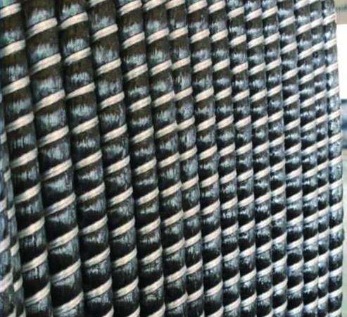

BASALT FIBER
BFRP Rebar
Basalt-fiber reinforcement for projects with corrosion and electrical insulation requirements.
The catalogue positions BFRP rebar as nonmagnetic, electrically insulating and resistant to acid and alkali environments. Confirm the resin system and suitability for your project with an engineer.

TECHNICAL INFORMATION
BFRP catalogue specifications.
These reference values apply to BFRP rebar. Final specifications require engineering confirmation.
| Property | Catalogue value |
|---|---|
| Diameter | Contact us for confirmation |
| Tensile strength | ≥750 MPa |
| Shear strength | Contact us for confirmation |
| Elasticity modulus | Engineering confirmation required |
| Elongation | ≥1.8% |
| Alkali resistance, strength retention | ≥85% |
Source: FRP Rebar Catalog, printed page 13.
Ask sales to confirm the exact diameter, length, resin system, surface finish and availability required for your project.
APPLICATIONS
Where the catalogue positions this product.
- Docks and dams
- Concrete roads and bridges
- Mining roadway support
- Corrosive environments
- Hospital NMR/CT facilities
- Telecom towers and transformer substations
Before specifying
Suitability depends on the exact product, resin, exposure conditions, structural design and applicable project standard. Ask your engineer to confirm design values and request the relevant test documentation from Oceanpower.
DOCUMENTS
Share the technical reference with your team.
The full catalogue includes BFRP rebar on printed page 13. Contact sales for current product-specific test reports and compliance documents.
Discuss your BFRP requirements.
Have your application, diameter, quantity, destination and required date ready. You can prepare a draft here; nothing is sent automatically. Sales must confirm pricing and delivery.